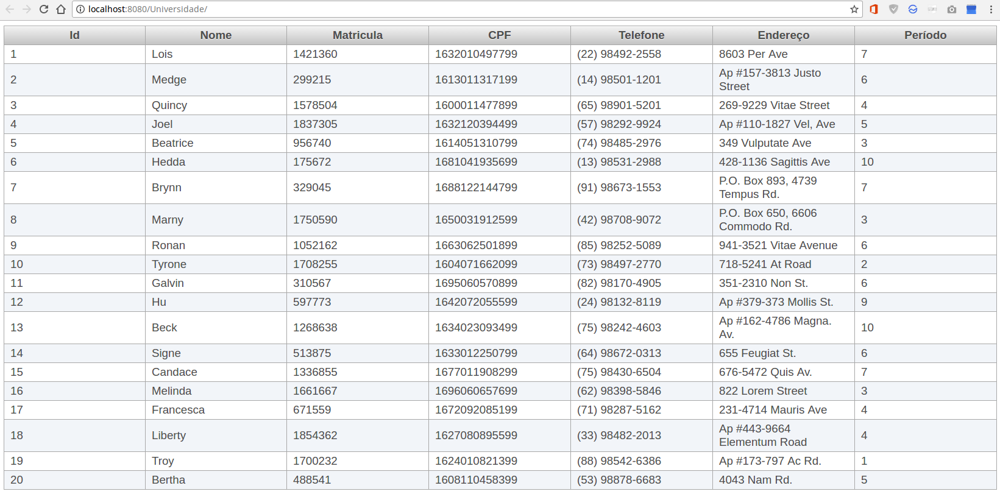

Incorporando elementos do PrimeFaces
Abaixo segue o link com exemplos simples de componentes para tabelas do PrimeFaces:
https://www.primefaces.org/showcase/ui/data/datatable/basic.xhtml
Agora iremos inserir no index.xhtml alguns componentes do PrimeFaces já customizados com as variáveis do nosso projeto:
<?xml version='1.0' encoding='UTF-8' ?>
<!DOCTYPE html PUBLIC "-//W3C//DTD XHTML 1.0 Transitional//EN" "http://www.w3.org/TR/xhtml1/DTD/xhtml1-transitional.dtd">
<html xmlns="http://www.w3.org/1999/xhtml"
xmlns:ui="http://xmlns.jcp.org/jsf/facelets"
xmlns:h="http://xmlns.jcp.org/jsf/html"
xmlns:p="http://primefaces.org/ui"
xmlns:f="http://xmlns.jcp.org/jsf/core">
<h:head>
<title>Universidade Exemplo</title>
</h:head>
<h:body>
<h:form>
<p:dataTable var="aluno" value="#{alunoBean.alunos}">
<p:column headerText="Id">
<h:outputText value="#{aluno.id}" />
</p:column>
<p:column headerText="Nome">
<h:outputText value="#{aluno.nome}" />
</p:column>
<p:column headerText="Matricula">
<h:outputText value="#{aluno.matricula}" />
</p:column>
<p:column headerText="CPF">
<h:outputText value="#{aluno.cpf}" />
</p:column>
<p:column headerText="Telefone">
<h:outputText value="#{aluno.telefone}" />
</p:column>
<p:column headerText="Endereço">
<h:outputText value="#{aluno.endereco}" />
</p:column>
<p:column headerText="Período">
<h:outputText value="#{aluno.periodo}" />
</p:column>
</p:dataTable>
</h:form>
</h:body>
</html>
Neste exemplo a "dataTable" possui o atributo "var", que é o tipo de objeto que será iterado no preenchimento - e o "value" é uma lista que contém objetos do mesmo tipo que declaramos na tag anterior.
Em cada coluna, usa-se diretamente a referência de variáveis em relação ao objeto que estamos utilizando, como por exemplo, "#{aluno.nome}".
Vale ressaltar que, nosso managed bean possui o nome "AlunoBean", porém na hora de referenciar no código xhtml, deve-se usar a primeira letra minúscula, caso contrário, ocorrerão erros de execução.
Resultado final: